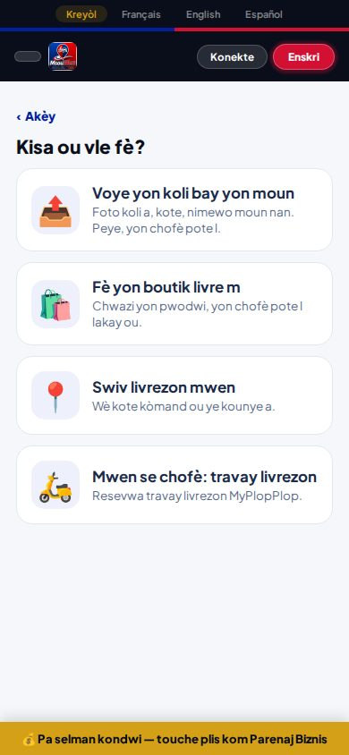
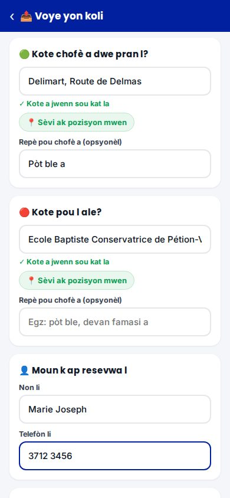
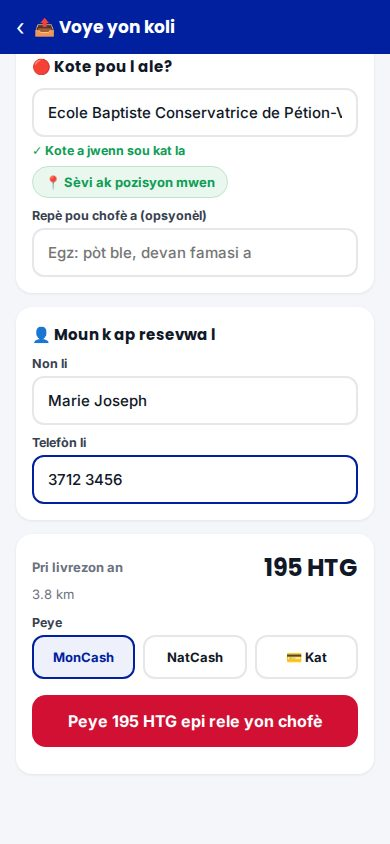
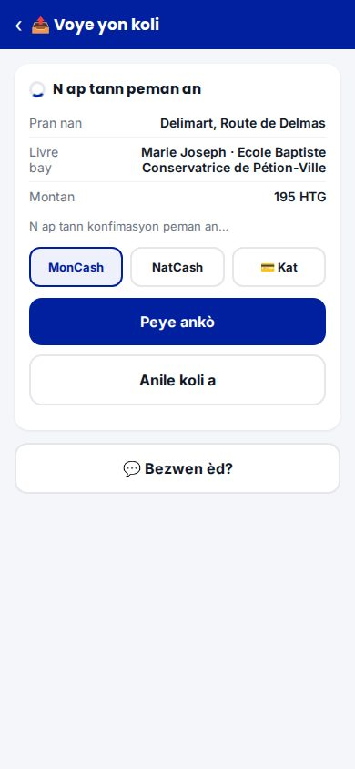
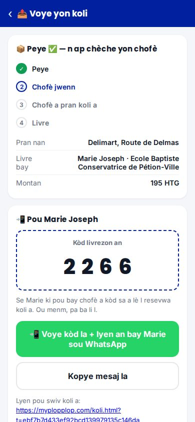
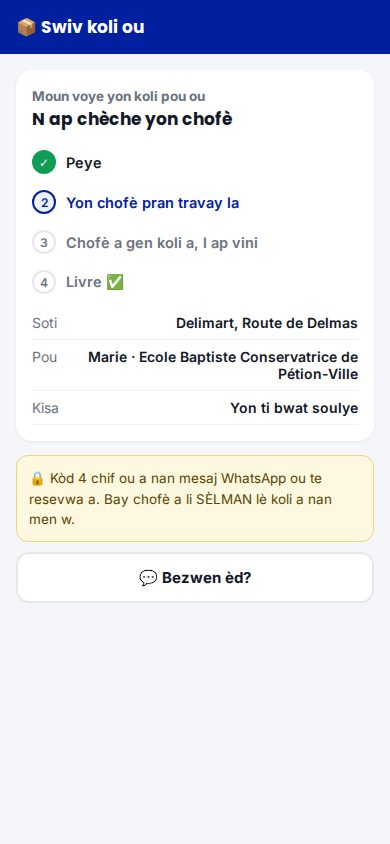
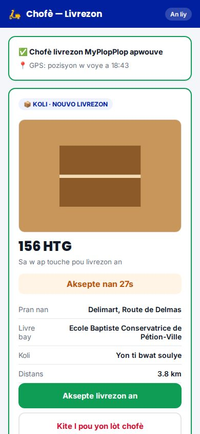
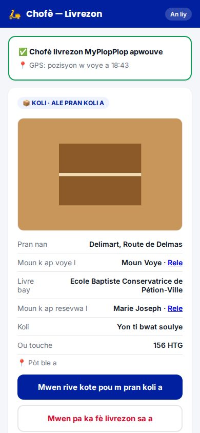
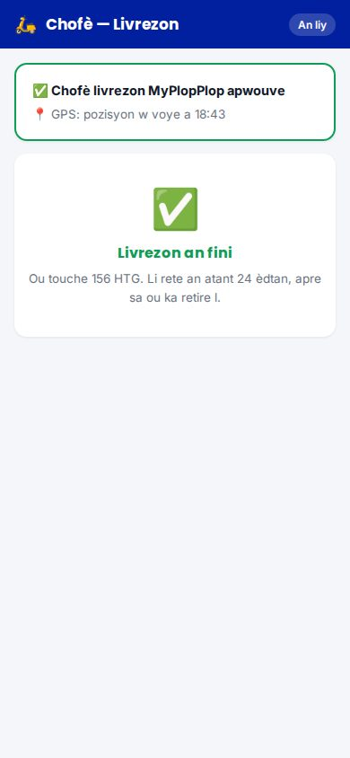
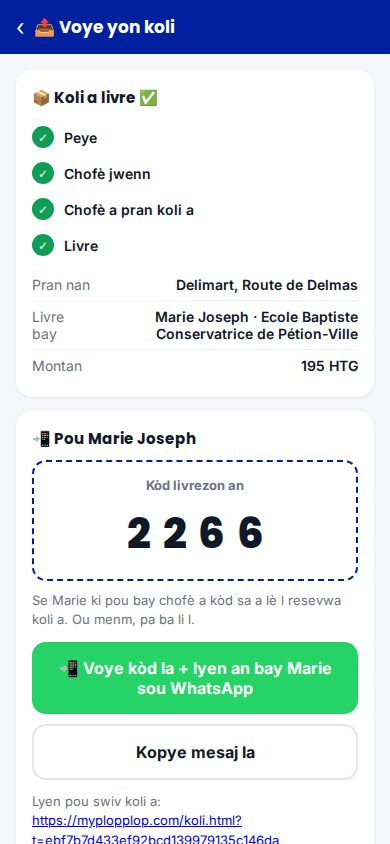

Foto sa yo se vrè paj yo, teste sou yon kopi (pa sou sit la an dirèk). Non, adrès, pri ak kòd yo se tès. Peman an te simile: pa gen lajan ki te deplase.
Premye chwa a: "Voye yon koli bay yon moun".

Foto a fèt ak kamera telefòn nan. Kote yo soti nan menm lis MsouWout la (Delimart, Eagle…), oswa GPS. Repè pou chofè a.

Se SÈVÈ a ki kalkile pri a. MonCash, NatCash oswa kat.

Okenn chofè pa wè koli a toutotan peman an pa konfime. Si moun nan fèmen paj la, sèvè a jwenn peman an poukont li.

Yon sèl bouton: WhatsApp louvri ak mesaj la pare pou moun k ap resevwa a (lyen + kòd 4 chif).

San kont, san paswòd. Li wè kote koli a ye. Pa gen nimewo telefòn ni kòd sou paj sa a.

Menm paj chofè a. Li wè foto koli a ak sa l ap touche (80%).

Li ka rele moun k ap voye a ak moun k ap resevwa a. "Mwen rive", "Mwen gen koli a".

San bon kòd la, livrezon an pa ka fini. Lajan chofè a rete an atant 24 èdtan, menm jan ak livrezon boutik yo.

